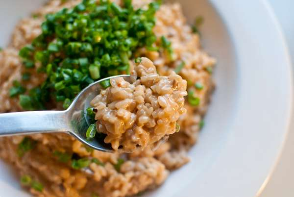

Toowoomba Risotto

for 2 people
Tool
Frying Pan
time
25m
Kcal
439.8kcal
Ingredients
2 cup Uncooked rice (or put rice into water for 30 minutes)
200 ml Fresh cream or milk
3 tablespoons soy sauce
1.5 tablespoons red pepper powder
1 teaspoon of sugar
A little Salt
A little Pepper
6 mushrooms
8 cloves of garlics
3 Shallots(or 1 Green onion)
Recipe
Put red pepper powder and soy sauce in milk or fresh cream beforehand and mix well
Remove bottom part of the mushroom as shown in the picture, and clean off the surface to make a clean mushroom
Slice the mushrooms and garlic into thin slices
Fry garlic and white part of shallots in oil because the white part is spicy
Put mushroom and fry as well
Then put washed rice and fry well. Fry until rice is slightly transparent. When you do risotto, you do not need to have a lot of rice in advance. Because the risotto itself must have a little of strength. You can just use it right away or put into water for 30 minutes before you start cooking.
Pour enough water until it covers the rice and boil it. To ensure that the rice is cooked well, repeat this process 2-3 times. Then blow away all the water
Mixed the sauce that you prepared in advance and put inside bowl
